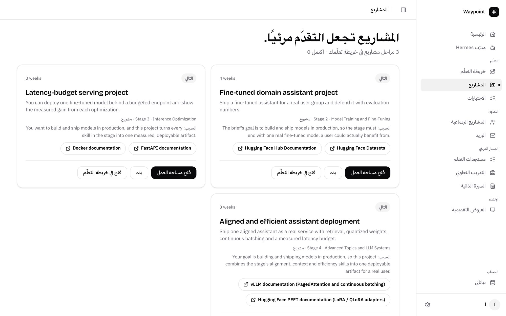
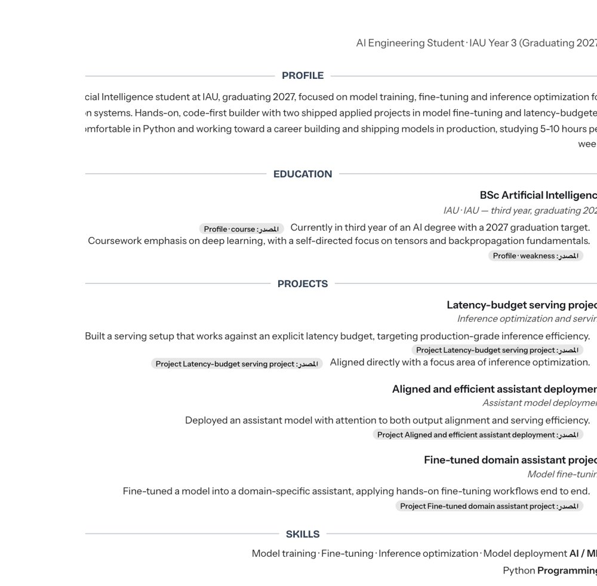

للتقدّم: ← أو Space · ملاحظات المتحدث N · المؤقت T · كل المحطات O · ملء الشاشة F
لا تتكلم لين الطريق يرسم نفسه داخل الشعار. بعدها اضغط.
قاسم · طالب ذكاء اصطناعي، السنة الثالثة
السنة الثالثة… وما زلت ضايع.
هذي مو قصتي بس. هذي قصة كل طالب كلمناه.
أنا قاسم. ما عندي إخوان كبار يقولون لي وش أسوي… فدخلت الجامعة لحالي.
جداول، deadlines، مواد… وأنا أطالع حولي وما أدري وين رايح.
فسويت اللي يسويه الكل: اعتمدت على الـ AI. يحل الـ labs، يحل الـ assignments…
ووصلت السنة الثالثة… وأنا ضايع أكثر من أول يوم.
(اضغط) بس هذي مو قصتي أنا بس. هذي قصة كل طالب كلمناه.
المشكلة
أربع مشاكل… يعيشها كل طالب
01
الطالب ضايع
وش أتعلم بعدها؟ وش علاقة المواد ببعض؟ ووين رايح بعد التخرج؟
مرشد واحد… لمئات الطلاب
02
الجامعة متأخرة عن السوق
كلمة agent ما انذكرت في المنهج ولا مرة. والـ co-op؟ تدوّر عليه آخر لحظة.
2019المنهج
7 سنين
2026السوق
03
نسلّم تفكيرنا للـ AI
الشغل ينسلّم… والتعلّم لا. وبالمشروع الجماعي: واحد يشتغل والباقي يتفرجون.
حل لي الـ lab بسرعة
تفضل، الحل كامل.
وبعدين؟
04
كل شيء مبعثر
سبع تطبيقات… ولا واحد يعرفك. وكل مرة تشرح نفسك من الصفر.
BlackboardChatGPTNotionTelegramLinkedInCalendarX
وش المشكلة بالضبط؟ أربع مشاكل… كل طالب عاشها.
(1) الجامعة تعطيك مواد وdeadlines… بس ما تعطيك اتجاه. ومرشد واحد لمئات الطلاب.
(2) منهجي مكتوب 2019. إحنا في 2026… وكلمة agent ما انذكرت فيه ولا مرة.
(3) «حل لي الـ lab». الشغل ينسلّم… بس ما تعلمت شيء.
(4) Notion، ChatGPT، Blackboard، Telegram، LinkedIn… سبع تطبيقات، ولا واحد يعرفك.
NotionChatGPTCalendarBlackboardTelegramLinkedInX
سبع تطبيقات… ولا واحد يعرفك.
فبنينا واحد يعرفك.
مدرّب واحد. خريطة طريق واحدة. رحلتك الجامعية كلها.
سبع تطبيقات… ولا واحد يعرفك.
(اضغط) فبنينا واحد يعرفك. مدرّب واحد، خريطة طريق واحدة، رحلتك الجامعية كلها.
ويشتغل مع الـ AI… مو ضده. خلوني أوريكم.
01 / 06 اليوم الأول
عرّف Waypoint بنفسك… مرة وحدة.
يقرأ الـ CV والـ GitHub والسجل الأكاديمي وBlackboard، ويسألك عن أهدافك.
كل اللي يستورده يبقى «مقترح»
ولا معلومة تصير حقيقة إلا إذا أنت أكّدتها
localhost:5173 · Hermesمن التطبيق الحي
السجل الأكاديميCVGitHub✓ أنت تأكّد
يوم واحد: تقول لـ Waypoint مين أنت. يقرأ الـ CV والـ GitHub والسجل الأكاديمي، ويسألك وش تبي توصل له.
(اضغط) كل شيء يستورده يبقى اقتراح…
(اضغط) وما فيه معلومة تصير حقيقة إلا إذا أنت أكّدتها.
02 / 06 خريطة الطريق
خريطة طريق مبنية عليك.
من مقرراتك واهتماماتك ووقتك، ووين تبي توصل.
مراحل ومحطات، وكل محطة لها سبب
وفيها اللي يطلبه السوق اليوم، مو منهج 2019
TransformersFine-tuningKV cacheQuantization
localhost:5173 · Roadmapمن التطبيق الحي
ويبني لك خريطة طريق: مقرراتك، اهتماماتك، وقتك، ووين تبي توصل.
(اضغط) مراحل واضحة… (اضغط) ومو بس مقررات: يضيف اللي يطلبه السوق اليوم. أشياء ما انذكرت بمنهجي.
03 / 06 مدرّب Hermes
مدرّب يعرفك… وما يحل عنك.
يشرح من خلال اللي تعرفه أصلاً، وبعدها يتأكد إنك فهمت.
سؤال، تمرين، بطاقات مراجعة… داخل المحادثة
التعلّم يصير عندك، مو عند الـ chatbot
localhost:5173 · Tensor fundamentalsلقطة من التطبيق
صح. وهذا اللي يخلي PyTorch يعالج 32 صورة مرة وحدة.
تتعثر؟ المدرّب يعرفك: يعرف خريطتك ومشاريعك. هنا يقول له: أنت تكتب Python بسهولة، فخلنا نبني الـ tensors على اللي تعرفه.
(اضغط) وهنا الفرق: ما يحل عنك. يعطيك سؤال…
(اضغط) ويتأكد إنك فعلاً فهمت.
04 / 06 المشاريع
كل مرحلة تنتهي بمشروع حقيقي.
مو بس تتعلم… تبني شيء تقدر توريه.
وكيل يشغّل مشروعك فعلياً ويختبره
ويقيّمه بالأدلة، ويقول لك وين الخلل بالضبط
localhost:5173 · Projectsلقطة من التطبيق

0
تقييم المشروع · من 100
Agentic Tool Playground
✓Project test suite (npm test)
✓Demo returns the right answer
✓Six JSON tool schemas validate
✕Scoring accepts 4000 for 400
✕Accepts a negated answer
90Requirements65Correctness85Quality
والتعلم ما يكفي: كل مرحلة تنتهي بمشروع حقيقي تبنيه.
(اضغط) وبعدها وكيل يشغّل مشروعك فعلياً ويقيّمه بالأدلة: 82 من 100. الاختبارات تمر… بس فيه خطأين في التصحيح، ويوريك وينهم.
05 / 06 التدريب التعاوني والسيرة
فرص تناسبك… وناقصك يدخل خريطتك.
شركات سعودية، مع سبب التوافق والمهارة الناقصة، قبل الـ deadline بشهور.
المهارة الناقصة تنضاف لخريطتك على طول
وسيرتك تنكتب من شغلك الفعلي: بياناتك المؤكدة ومشاريعك المقيّمة
localhost:5173 · Co-opمن التطبيق الحي
خريطتك · أُضيف+ MLOps / model deployment
CV · PDF

وموسم الـ co-op: يطابقك مع شركات سعودية تناسبك، ويقول لك ليش.
(اضغط) والمهارة الناقصة؟ تدخل خريطتك على طول… قبل الـ deadline بشهور.
(اضغط) وسيرتك تنكتب من اللي سويته فعلاً، وتنزّلها PDF. ومو بس للحاسب: طب، هندسة، أي تخصص.
06 / 06 المشاريع الجماعية
واحد يشتغل… والباقي يتفرجون؟
ارفع الملف
يرتّب المشروع كاملالـ deliverables والـ rubric والمواعيد، وأنت تراجع قبل ما يدخل
/split
توزيع عادل يطوّر كل واحدحسب مهارات كل عضو وضغطه وهدفه، ومع كل مهمة سببها
تصويت
Hermes يقترح… الفريق يقرربالأغلبية يتطبّق، والقائد يقدر يحسم
/standup/risks/catchup
localhost:5173 · Group 1من التطبيق الحي
س
سارة · Data model (ERD) ↗ تطوير: نمذجة البيانات لهدف ML
ع
علي · API requirements قوته: REST APIs
ن
نورة · Wireframes قوتها: Figma
✓✓✓تم التطبيق · بأغلبية الفريق
[راشد] كلنا عشناها: group project فيه أربعة… واحد يسوي كل شيء بـ ChatGPT، والباقي spectators.
(اضغط) ترفع ملف المشروع، وHermes يطلّع الـ deliverables والـ rubric والمواعيد… وأنت تراجع قبل ما يدخل.
(اضغط) تكتب /split: يوزّع بالعدل حسب مهارات كل واحد وضغطه، وكل واحد ياخذ مهمة تطوّره، مو بس اللي يعرفه.
(اضغط) بس Hermes ما يقرر. يقترح. الفريق يصوّت، والـ lead يقدر يحسم.
(اضغط) ويتابعكم: standup، تحذير لو الـ deadline في خطر، ولو غبت يومين /catchup يلخّص لك. بالـ AI… مو ضده.
Hermes يقترح… الطالب يقرر.والقرار يتحقق في الـ API، مو بس في الـ prompt.
[فراس] البيانات تجي من كل مكان: Blackboard، Outlook، LinkedIn عن طريق Apify، Telegram، Hackathonat، والـ CV والـ GitHub حقك.
(1) كلها تمر على Jev أول: الـ decision layer. يفلتر، يقيّم الـ relevance، ويحمي البيانات. ولو الـ cloud طاح، يكمل local.
(2) تتخزّن في SQLite، مصدر الحقيقة… وما فيه معلومة تصير fact إلا إذا الطالب أكّدها.
(3) وفي النص Hermes، الـ agent اللي يربط كل هذا بالطالب.
(4) عنده tools بصلاحية لكل run، skills، memory خاصة لكل طالب، ويبني الـ roadmap، ويدير الـ group projects، ويقيّم المشاريع.
(5) والأهم: self-improving. يتعلّم skills جديدة ويتذكّرك… فكل ما استخدمته، صار أذكى معك. Hermes يقترح… الطالب يقرر.
لو كان عندي Waypoint من أول يوم…
…ما كنت بوصل السنة الثالثة ضايع.
فلو رجعنا لقصتي… لو كان عندي Waypoint من أول يوم…
(اضغط) …ما كنت بوصل السنة الثالثة ضايع.
Waypoint
الخريطة اللي كلنا نستحقها.
بالـ AI… مو ضده.
قاسم آل محفوظالسوق والرؤيةفراس آل صوابالتقنية والأمانراشد الخثلانالمشاريع الجماعية
شكراً · أسئلتكم؟
مع الـ AI… مو ضده.
إحنا قاسم، فراس، وراشد… وهذا Waypoint. شكراً، ونسمع أسئلتكم.
[الأسئلة] قاسم: السوق والرؤية · فراس: كيف يشتغل والأمان والخصوصية · راشد: الغش وعدالة الفريق